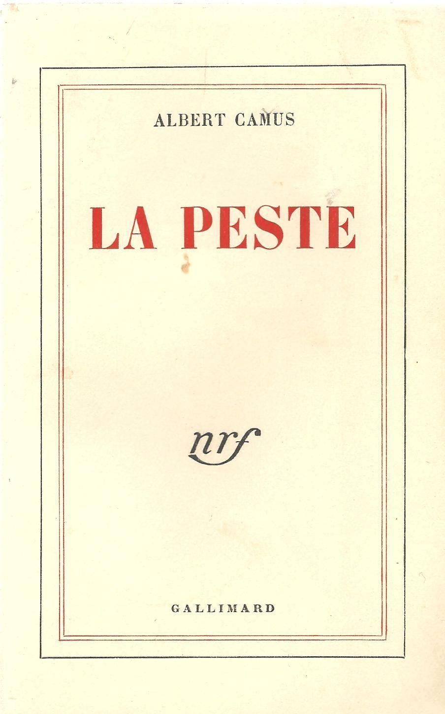

Suicide and The Absurdity of Life
The Plague
Many existentialist writers have addressed the Absurd, each with their own interpretation of what it is and what makes it important. Kierkegaard explains that the absurdity of religious truths prevents us from reaching God rationally. Sartre recognizes the absurdity of individual experience. Camus's thoughts on the Absurd begins with his first cycle of books and the literary essay The Myth of Sisyphus, (Le Mythe de Sisyphe), his major work on the subject. In 1942 he published the story of a man living an absurd life in L'Étranger. He also wrote a play about the Roman emperor Caligula, pursuing an absurd logic, which was not performed until 1945. His early thoughts appeared in his first collection of essays, L'Envers et l'endroit (Betwixt and Between) in 1937. Absurd themes were expressed with more sophistication in his second collection of essays, Noces (Nuptials), in 1938 and Betwixt and Between. In these essays, Camus reflects on the experience of the Absurd. Aspects of the notion of the Absurd can be found in The Plague.
Camus follows Sartre's definition of the Absurd: "That which is meaningless. Thus man's existence is absurd because his contingency finds no external justification". The Absurd is created because man, who is placed in an unintelligent universe, realises that human values are not founded on a solid external component; or as Camus himself explains, the Absurd is the result of the "confrontation between human need and the unreasonable silence of the world." Even though absurdity is inescapable, Camus does not drift towards nihilism. But the realization of absurdity leads to the question: Why should someone continue to live? Suicide is an option that Camus firmly dismisses as the renunciation of human values and freedom. Rather, he proposes we accept that absurdity is a part of our lives and live with it.
The turning point in Camus's attitude to the Absurd occurs in a collection of four letters to an anonymous German friend, written between July 1943 and July 1944. The first was published in the Revue Libre in 1943, the second in the Cahiers de Libération in 1944, and the third in the newspaper Libertés, in 1945. The four letters were published as Lettres à un ami allemand (Letters to a German Friend) in 1945, and were included in the collection Resistance, Rebellion, and Death.
Camus regretted the continued reference to himself as a "philosopher of the absurd". He showed less interest in the Absurd shortly after publishing Le Mythe de Sisyphe. To distinguish his ideas, scholars sometimes refer to the Paradox of the Absurd, when referring to "Camus's Absurd".